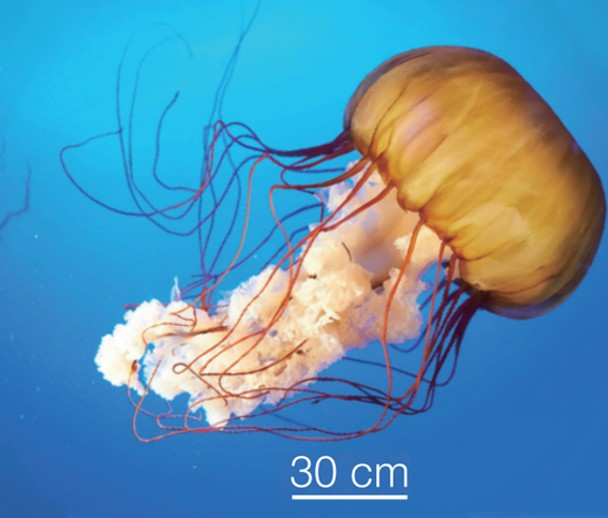
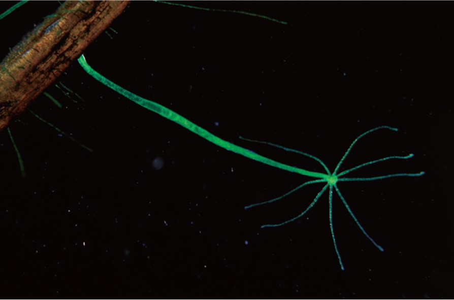
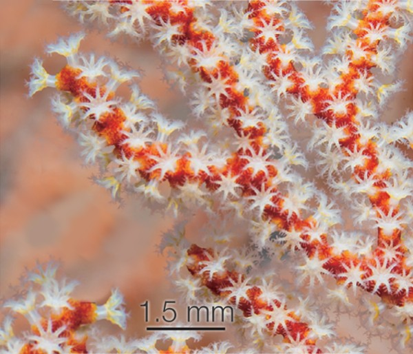
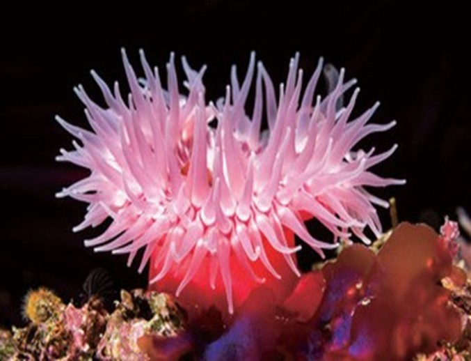

觀察水母、水螅、珊瑚蟲與海葵，找出牠們共同的捕食與防禦武器：刺絲胞。
刺絲胞動物多為肉食性，消化構造只有一個開口。
牠們的觸手及身體上有特殊細胞，稱為刺絲胞。刺絲胞可用於捕食及防禦。
常見的刺絲胞動物有水母、水螅、珊瑚蟲和海葵等。




圖中有 3 個閃爍的黃色熱點，點擊每一個，了解刺絲胞動物的身體構造。
刺絲胞是一種特殊的細胞，內部捲曲著有毒的刺絲。當獵物或天敵碰觸到觸發毛時，刺絲會瞬間彈射出去，刺入對方身體並注入毒素，使獵物麻痺或死亡。